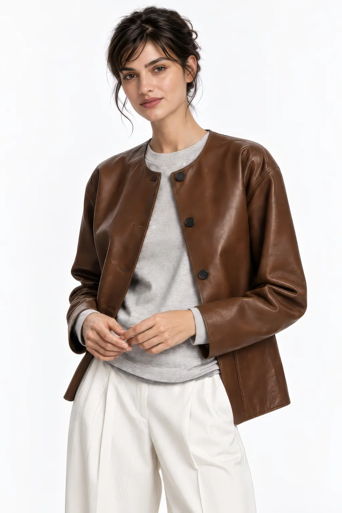

LONETREE / THE GROWING FILES · 001
Field
Notes.
创意的根，
从一次好奇开始。
关于 AI、设计与视觉文化的观察。这里不做未经核实的消息搬运：每篇注明来源与日期，把新工具放回真实的创作问题里。
01 / AI 动态02 / 设计观察03 / 方法论

INDEX / 01—02
LONETREE / THE GROWING FILES · 001
关于 AI、设计与视觉文化的观察。这里不做未经核实的消息搬运：每篇注明来源与日期，把新工具放回真实的创作问题里。

INDEX / 01—02